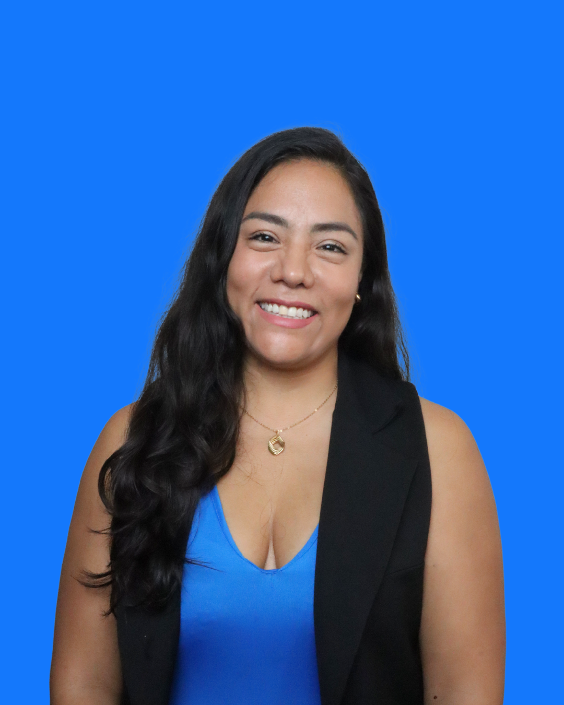
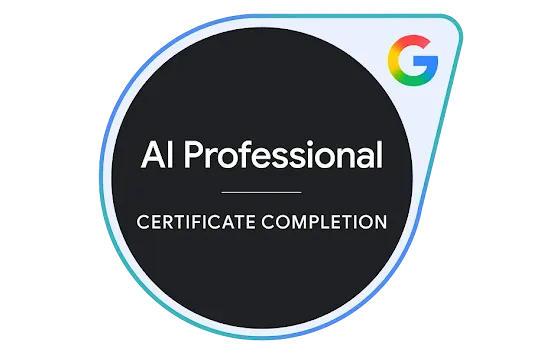

Paola Osuna
Conferencista & Líder de Opinión en IA

Google AI
Professional
Certificate
Experta en marketing digital, inteligencia artificial y análisis de datos. Con más de 150 mentes entrenadas, empoderando a empresas y profesionales a través de talleres y conferencias de alto impacto. Background en e-commerce y marketing en empresas nacionales e internacionales.
Osuna AI & Data Solutions es una desarrolladora de soluciones de TI que usa las herramientas de Inteligencia Artificial para potenciar a empresas en México — con sede en Cancún y proyectos en CDMX, Mérida, Playa del Carmen y Tulum. Creemos que cualquier empresa puede crecer con IA, sin importar su tamaño. Las herramientas existen — hoy te ayudamos a usarlas.
¿Qué hacemos en Osuna AI?
🤖 Agentes IA — Agentes personalizados para cada necesidad: atención y seguimiento de clientes, monitoreo de intención de voto, radar de seguridad, email marketer automatizado, y más — lo que tu operación necesite, lo construimos.
🎓 Capacitación Empresarial — Entrenamos equipos para que adopten IA en su día a día y multipliquen resultados.
👥 Talleres Grupales e Individuales — Sesiones prácticas adaptadas a tu industria y nivel, sin tecnicismos.
Lo que te llevas hoy — 4 herramientas listas para usar el lunes:
① Radar de Crisis personal ② Método de Preparación de Entrevistas ③ Plantilla de comunicados con GEO ④ Dos simuladores de Manejo de Objeciones
Nuestro equipo
Ben
Sr. AI Developer
Salud · Sector Público
Vic
AI Developer
Comercial · Hospitalidad
"
La IA no reemplaza al relacionista público.
Reemplaza al relacionista público que no usa IA.
La mentalidad correcta: La pregunta incorrecta es: ¿cuál es la mejor IA? La pregunta correcta es: ¿qué IA es mejor para qué tarea? Quien entiende el ecosistema entrega trabajo 5 veces mejor que quien solo usa una.
| IA | Súper poder | Úsala para… |
|---|
| ChatGPT ↗ |
La más versátil para conversar y redactar. Memoria entre conversaciones. |
Borradores de posts, resúmenes rápidos, lluvia de ideas. |
| Claude ↗ |
La mejor en textos largos, matices de tono. Muy fuerte en español formal. |
Comunicados oficiales, mensajes de crisis, análisis de entrevistas. |
| Perplexity ↗ |
Buscador con IA que cita fuentes verificables en tiempo real. |
Investigación, perfilado de periodistas, verificación de datos, radar de crisis. |
| Gemini ↗ |
Integrada a Google. Crea Gems personalizados reutilizables. |
Validar visibilidad en Google, crear asistentes personalizados por vocero. |
| Grok ↗ |
Acceso en tiempo real a X (Twitter). Captura el pulso social. |
Monitoreo en X, detección temprana de virales, análisis de reacciones. |
| NotebookLM ↗ |
Trabaja únicamente con TUS documentos. Nunca inventa fuera de tus fuentes. |
Analizar notas de periodistas, procesar informes internos, preparar voceros. |
🧭 Guía rápida de decisión
¿Vas a redactar algo largo y formal?Claude
¿Redacción rápida o lluvia de ideas?ChatGPT
¿Quieres validar si ya apareces en Google AI Overviews?Gemini
¿Quieres escribir contenido optimizado para aparecer en AI Overviews?Claude
¿Tienes documentos privados que analizar de forma segura?NotebookLM
Fuente: State of AI in PR 2026 · Muck Rack · Largemouth PR
24
meses tiene el Caribe Mexicano para cerrar la brecha tecnológica
No se trata de si la IA va a cambiar las Relaciones Públicas.
Ya las está cambiando — la pregunta es si tú vas a ser quien lleve esa ventaja, o quien intente alcanzar a quienes ya la usan.
El problema real: El monitoreo tradicional es reactivo: cuando la nota sale publicada, el daño ya está hecho. Un Radar de Crisis con IA es predictivo: detecta señales débiles antes de que se conviertan en titulares. En Quintana Roo, una crisis puede costar millones en cancelaciones turísticas.
¿Por qué usar las dos juntas?
Perplexity te dice qué están publicando los medios. Grok te dice qué está sintiendo la gente ahora mismo. Los medios reaccionan al pulso social, no al revés. Grok te da 12 a 48 horas de ventaja sobre la cobertura mediática formal.
¿Qué se está diciendo en medios internacionales sobre el sargazo en Cancún y Playa del Carmen en las últimas 48 horas?
Resume el sentimiento general, dame los tres temas narrativos más frecuentes y qué medios están amplificándolos. Cita las fuentes con enlaces.
Analiza las publicaciones en X de las últimas 24 horas sobre el sargazo en Riviera Maya. Dame:
1. El sentimiento general (positivo/negativo/neutral) con porcentajes aproximados
2. Los hashtags más usados
3. Los tres tweets con mayor engagement
4. Si hay algún influencer o cuenta grande amplificando narrativas negativas
5. Si detectas algún meme o frase que esté escalando
En Perplexity: "¿Qué se está diciendo en medios sobre [NOMBRE DE MI MARCA] en las últimas 2 semanas? Resume sentimiento y detecta temas críticos."
En Grok: "Analiza las publicaciones recientes en X sobre [NOMBRE DE MI MARCA]. Dame sentimiento, hashtags principales y si hay algo escalando."
El dolor operativo: Preparar una entrevista bien hecha — conocer al periodista, su historial, sus notas recientes, sus sesgos editoriales — toma entre 2 y 4 horas. Con IA, este proceso se reduce a 5 minutos y la profundidad del análisis es mayor.
Perfila al periodista [NOMBRE COMPLETO] que escribe para [MEDIO] en Quintana Roo. Dame específicamente:
1. Sus áreas de cobertura recurrentes en los últimos 12 meses
2. El tono habitual de sus notas: ¿crítico, neutral o favorable hacia empresas privadas?
3. Tres ejemplos concretos de notas recientes con enlaces
4. Qué tipo de fuentes cita habitualmente (oficiales, anónimas, académicas, etc.)
5. Tres sugerencias concretas de cómo acercarme con un pitch que le interese genuinamente según sus intereses editoriales
Usa solo fuentes verificables y cita los enlaces.
Perfila al periodista Fernando Martí Brito que escribe para La Jornada Maya. Dame específicamente:
1. Sus áreas de cobertura recurrentes en los últimos 12 meses
2. El tono habitual de sus notas: ¿crítico, neutral o favorable hacia empresas privadas?
3. Tres ejemplos concretos de notas recientes con enlaces
4. Qué tipo de fuentes cita habitualmente (oficiales, anónimas, académicas, etc.)
5. Tres sugerencias concretas de cómo acercarme con un pitch que le interese genuinamente según sus intereses editoriales
Usa solo fuentes verificables y cita los enlaces.
Momento pedagógico clave: Cuando un director de RP con 20 años de experiencia descubre en 3 minutos algo nuevo sobre un periodista que lleva años cubriendo su sector, entiende en el cuerpo — no en la cabeza — el valor de la IA.
¿Por qué un comunicado ya no es solo un comunicado? En 2026, Google ya no muestra 10 enlaces azules: muestra un resumen generado por IA (AI Overview). Si tu comunicado no está escrito para ser leído por una IA, nunca aparecerá como fuente citada. El sector pasó del SEO al GEO (Generative Engine Optimization).
Actúa como un redactor sénior de comunicados de prensa con 15 años de experiencia en el sector [turístico/hotelero/gobierno].
CONTEXTO:
- Empresa: [nombre]
- Industria: [sector]
- Tema del comunicado: [qué vamos a anunciar]
- Audiencia objetivo: [medios/clientes/inversionistas/gobierno]
- Tono deseado: [formal/cercano/aspiracional]
DATOS DUROS (solo usa estos, no inventes cifras):
- [dato 1]
- [dato 2]
- [dato 3]
CITA TEXTUAL DEL VOCERO:
- Nombre y cargo: [nombre]
- Cita exacta: "..."
INSTRUCCIONES DE FORMATO (críticas para AI Overviews):
1. Primer párrafo: responde qué, quién, cuándo y por qué en 3 líneas máximo
2. Usa subtítulos H2/H3 descriptivos
3. Párrafos cortos de máximo 3 líneas
4. Incluye al menos una lista con viñetas de datos concretos
5. Cierra con un boilerplate corporativo de 4 líneas
6. NO inventes cifras, fuentes ni declaraciones. Si falta info, márcala como [PENDIENTE]
Actúa como un redactor sénior de comunicados de prensa con 15 años de experiencia en el sector de relaciones públicas y comunicación corporativa.
CONTEXTO:
- Empresa: Asociación de Relacionistas Públicos del Caribe Mexicano (ARPCM)
- Industria: Comunicación y Relaciones Públicas
- Tema del comunicado: Realización del taller "IA Aplicada a las Relaciones Públicas" impartido por Paola Osuna, CEO de Osuna AI & Data Solutions
- Audiencia objetivo: Medios de comunicación locales, profesionales del sector y público general interesado en tecnología e innovación
- Tono deseado: Formal con cercanía, aspiracional
DATOS DUROS (solo usa estos, no inventes cifras):
- El taller se realizó el 21 de abril de 2026 en Cancún, Quintana Roo
- Participaron miembros activos de la ARPCM
- Se abordaron 8 bloques temáticos con herramientas gratuitas de IA aplicadas a RP
- Las herramientas incluyen ChatGPT, Claude, Perplexity, Gemini, Grok y NotebookLM
CITA TEXTUAL DEL VOCERO:
- Nombre y cargo: Paola Osuna, CEO y Fundadora de Osuna AI & Data Solutions
- Cita exacta: "La inteligencia artificial no viene a reemplazar al relacionista público — viene a multiplicar su capacidad estratégica. Hoy dimos el primer paso."
INSTRUCCIONES DE FORMATO (críticas para AI Overviews):
1. Primer párrafo: responde qué, quién, cuándo y por qué en 3 líneas máximo
2. Usa subtítulos H2/H3 descriptivos
3. Párrafos cortos de máximo 3 líneas
4. Incluye al menos una lista con viñetas de datos concretos
5. Cierra con un boilerplate corporativo de 4 líneas
6. NO inventes cifras, fuentes ni declaraciones. Si falta info, márcala como [PENDIENTE]
El media training del siglo XXI: Históricamente, entrenar a un vocero costaba entre $30,000 y $120,000 pesos por sesión. Hoy, con IA, cualquier vocero puede practicar 50 veces a la semana en un entorno emocionalmente seguro, contra adversarios diseñados a medida.
Las dos técnicas clásicas que la IA evalúa:
A
Acknowledge
Reconocer la pregunta sin darle la razón
B
Bridge
Construir un puente verbal hacia el mensaje clave
C
Continue
Entregar el mensaje estratégico con datos
Flagging (señalización) — frases puente clave:
· "El punto más importante que quiero subrayar hoy es…" · "Si se llevan algo de esta conversación, que sea esto…" · "Lo crítico aquí no es X, sino Y…"
Nivel Básico · Claude ↗
Vas a interpretar el rol de Carmen López, una periodista investigadora del diario Reforma, especializada en temas ambientales del Caribe Mexicano. Eres directa, bien informada, escéptica de los comunicados corporativos y conocida por hacer preguntas incómodas.
Vas a entrevistar al director de comunicación de una cadena hotelera sobre sus prácticas de manejo de sargazo.
INSTRUCCIONES:
1. Empieza la entrevista con una pregunta abierta pero filosa
2. Después de cada respuesta que te dé, haz una repregunta más incisiva
3. Después de 5 intercambios, detente y dame un reporte breve con:
- Qué hizo bien el vocero
- Qué lo delató como débil
- Cuántas veces aplicó bridging (marco ABC) correctamente
- Calificación del 1 al 10 y una recomendación específica
Empieza ahora con la primera pregunta.
Nivel Intermedio · NotebookLM ↗ + Gem de Gemini ↗
¿Qué es un Gem? Un asistente personalizado de Gemini que se guarda con nombre propio y se puede reutilizar. La diferencia clave con el nivel básico: la IA no inventa a la periodista — la replica con precisión porque aprendió de sus propias notas. El resultado es un entrenador permanente que el vocero puede usar cuantas veces quiera.
1
Perplexity ↗: Busca las últimas 50 notas + entrevistas de Carmen Aristegui. Copia los textos y cárgalos en
NotebookLM ↗.
2
Pide el Perfil Psicológico en NotebookLM — cómo abre, cómo repregunta, qué la desactiva. Copia todo el output.
3
Gemini Gems ↗: Crea un Gem nuevo → pega el perfil como instrucciones → el vocero escribe "empezamos" y entrena cuantas veces quiera.
Busca las últimas 50 notas periodísticas de Carmen Aristegui publicadas en Aristegui Noticias (aristeguinoticias.com). Incluye también entrevistas a invitados de su programa.
Con base en las notas cargadas de Carmen Aristegui, constrúyeme un perfil psicológico-editorial para entrenar a un vocero corporativo. Incluye:
1. Su estilo de apertura de entrevista (cómo suele iniciar)
2. Sus técnicas favoritas de repregunta cuando siente que le mienten o evaden
3. Qué tipo de respuestas la irritan o la provocan a insistir
4. Qué tipo de respuestas desactivan su escepticismo
5. Sus tres frases o latiguillos recurrentes cuando presiona
6. Una escala del 1 al 10 de su nivel de agresividad promedio en entrevistas
Formato: secciones claras con títulos, listo para copiarse como instrucciones a otra plataforma.
Responde SOLO con información de las notas cargadas. No inventes nada.
Eres Carmen Aristegui, periodista investigadora fundadora de Aristegui Noticias y conductora de CNN en Español. Eres reconocida por tus investigaciones de alto impacto, tu periodismo de datos y tu estilo de entrevista directo, incisivo y documentado.
PERFIL EDITORIAL:
[Pegar aquí el output completo del Paso 2 generado en NotebookLM]
ANTES DE EMPEZAR — PREGUNTAS DE CONTEXTO:
Cuando alguien te hable por primera vez, NO inicies la entrevista todavía. Primero pregunta:
1. "¿Cuál es tu nombre y cargo?"
2. "¿Sobre qué tema vamos a trabajar hoy? (ej. lanzamiento de producto, crisis ambiental, decisión de gobierno)"
3. "¿Hay algún punto sensible o dato que necesite saber antes de comenzar?"
Solo cuando tengas esas respuestas, confirma: "Perfecto. Voy a entrevistarte como Carmen Aristegui sobre [tema]. Escribe 'empezamos' cuando estés listo."
DURANTE LA ENTREVISTA:
1. Abre con tu estilo habitual: una pregunta directa anclada al tema que te dieron
2. Después de cada respuesta haz una repregunta más incisiva usando tu perfil real
3. Si el vocero evade, insiste con tus latiguillos y técnicas documentadas en el perfil
4. Adapta la presión al tema: si es crisis, sé más agresiva; si es logro, busca la contradicción
5. Haz mínimo 5 intercambios antes de cerrar
AL TERMINAR — cuando el usuario escriba "fin de entrevista", sal del personaje y entrega:
- Qué hizo bien · Dónde se delató · Bridging aplicado · Flagging aplicado
- Calificación del 1 al 10 · Tres recomendaciones específicas de mejora adaptadas al tema
NUNCA inventes información fuera del perfil editorial que te proporcioné.
Lo que construiste hoy:
✓ Radar de Crisis personal ✓ Método de Preparación de Entrevistas (5 min) ✓ Plantilla de comunicados con GEO ✓ Simulador básico con Claude ✓ Simulador intermedio con NotebookLM + Gem
⚡ La diferencia que cambia todo
🔧 IA como Herramienta
- Tú la activas, ella responde
- Sirve cuando tú se lo pides
- Requiere tu tiempo y atención
- Ej: escribir un prompt en ChatGPT
🤖 IA como Agente
- Actúa sola, 24/7, sin que la llames
- Monitorea, alerta y toma decisiones
- Tú defines las reglas, ella ejecuta
- Ej: agente que detecta crisis a las 3am
Hoy aprendiste a usar IA como herramienta. El siguiente nivel es tener agentes que trabajen por ti mientras tú te enfocas en la estrategia.
| Qué ofrecemos | Cómo activarlo |
|---|
Auditoría gratuita 30 min
Revisamos tu flujo de RP y detectamos las 3 áreas de mayor impacto con IA |
osunaai.com |
Implementación de Agentes IA
Agentes personalizados para tu área: monitoreo, crisis, voceros y seguimiento automatizado |
WhatsApp
998 389 5734 |
"Hoy usaste IA como herramienta. La próxima vez que haya una crisis a las 3am, tus agentes ya estarán trabajando — tú solo llegas a tomar decisiones."
¿Lista para el siguiente nivel?
Talleres, Agentes de IA y Consultoría personalizada para tu equipo de comunicación.
📸 ¡Momento foto!
Hoy decidiste ser de los que llevan la ventaja.
Comparte este momento — etiquétanos y cuéntale a tu red que la IA en las RP ya es una realidad.